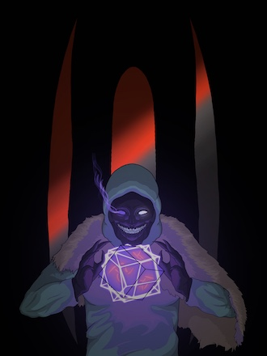
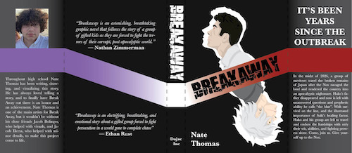

Digital Work

Personal piece of my cat named Finn.

A simplistic personal drawing for a profile picture for my friend.

Personal piece of a friend in a game.

Personal piece of a friend in a game.

School project part 1 - making a piece using Half Alive's lryics for Hot Tea to make a traditionally piece.

School project part 1 - making a piece using Half Alive's lryics for Hot Tea to make an expressive piece using the lryics.

School piece to make a book jacket that I used my friend's story as the inspiration. Breakaway.